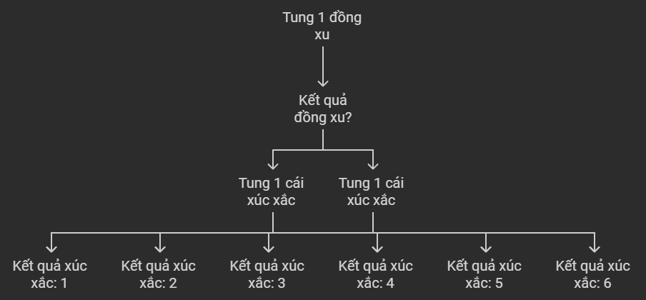
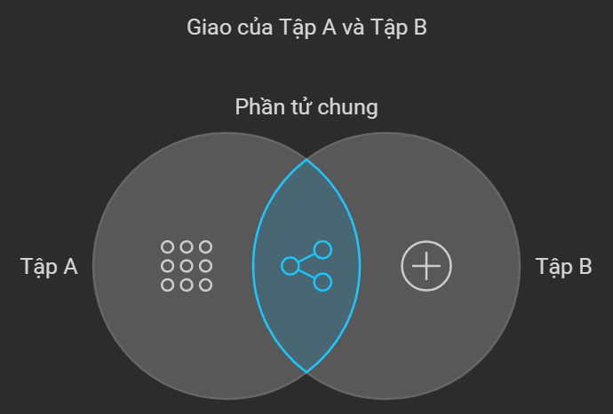
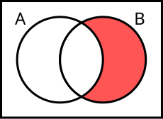
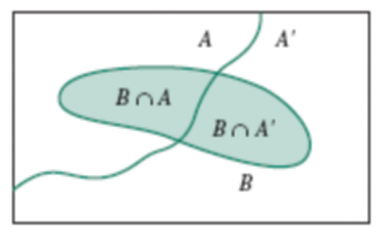
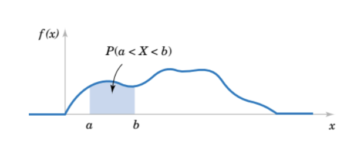
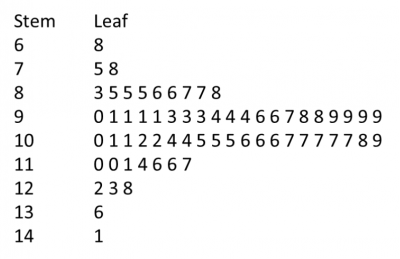
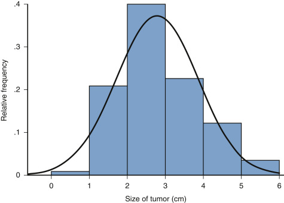
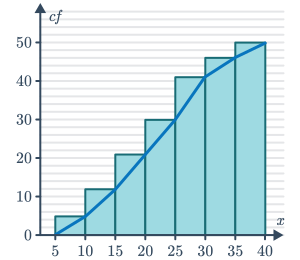
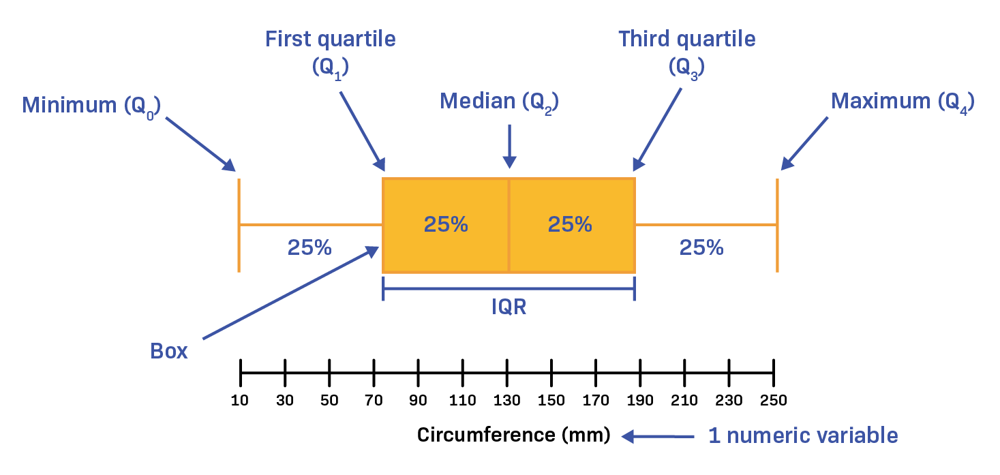

Table of Contents
Course Materials
Chapter 1: Introduction and Role of Statistics in Engineering
Xác suất thống kê ứng dụng trong kỹ thuật và công nghệ để phân tích dữ liệu, đưa ra kết luận và giải quyết vấn đề.
Phương pháp thống kê chính
- Descriptive statistics (thống kê mô tả): Tóm tắt, trình bày dữ liệu bằng các đồ thị, bảng biểu và các đại lượng đặc trưng.
- Inferential statistics (thống kê suy luận): Mô tả, suy đoán tính chất một tổng thể dựa trên 1 mẫu, sử dụng trong việc kiểm định giả thuyết và ước lượng tham số.
Các khái niệm quan trọng
- Data: Thông tin từ quan sát, đo lường.
- Population: Tổng thể nghiên cứu.
- Parameter: Đặc trưng của Population.
- Sample: Tập con của Population.
- Statistic: Đặc trưng của Sample, ước lượng Parameter.
- => Chúng ta sử dụng Statistic (Sample) để suy luận Parameter (Population).
- VD: Xác định tỉ lệ lỗi các sản phẩm (Population) trong quá trình sản xuất, ta lấy 300 sản phẩm (Sample) để kiểm tra.
Phân loại dữ liệu
- Qualitative data (dữ liệu định tính): Không thể đo lường bằng số, như màu sắc, loại vật liệu, ...
- Quantitative data (dữ liệu định lượng): Có thể đo lường bằng số, như chiều cao, trọng lượng, ...
- Discrete data (dữ liệu rời rạc): Có thể đếm được, như số lượng sản phẩm lỗi, số lần thử nghiệm, ...
- Continuous data (dữ liệu liên tục): Có thể nhận bất kỳ giá trị nào trong một khoảng, như thời gian, nhiệt độ, ...
Phương pháp thu thập dữ liệu
- Observational study: Nghiên cứu quan sát không
can thiệp vào đối tượng.
- VD: Quan sát hành vi ăn uống của học sinh trong căng tin mà không thay đổi thực đơn hoặc môi trường.
- Experiment: Nghiên cứu có can thiệp và kiểm
soát các yếu tố.
- VD: Thử nghiệm tác động của một loại thuốc mới bằng cách chia ngẫu nhiên bệnh nhân thành hai nhóm, một nhóm dùng thuốc và một nhóm dùng giả dược.
- Retrospective study: Nghiên cứu dựa trên dữ
liệu trong quá khứ.
- VD: Nghiên cứu mối liên hệ giữa hút thuốc và ung thư phổi bằng cách phân tích hồ sơ y tế của bệnh nhân đã được chẩn đoán trong quá khứ.
- Prospective study: Nghiên cứu theo dõi đối
tượng trong tương lai.
- VD: Theo dõi một nhóm người không hút thuốc trong 20 năm để xem liệu họ có phát triển bệnh tim hay không.
Ứng dụng trong kỹ thuật
- Kiểm soát chất lượng sản phẩm
- Tối ưu hóa quy trình sản xuất
- Phân tích độ tin cậy hệ thống
- Dự đoán tuổi thọ thiết bị
- Thiết kế và phân tích thí nghiệm
Ví dụ minh họa
Chapter 2: Probability
2.1 Sample spaces and events (Không gian mẫu và biến cố)
Random experiment (Thí nghiệm ngẫu nhiên)
Là một thực nghiệm để dẫn tới những kết quả khả thi.
Ví dụ: Tung 1 đồng xu
Outcomes: xấp hoặc ngửa
Sample space (Không gian mẫu)
Chứa tất cả những kết quả có khả năng xảy ra, ký hiệu là S.
Ví dụ: Tung đồng xu 2 lần
Outcomes: S = {xấp xấp, xấp ngửa, ngửa ngửa, ngửa xấp}
Tree diagram (Biểu đồ cây)
Không gian mẫu có thể được biểu diễn dạng biểu đồ cây.
Ví dụ: Tung 1 đồng xu sau đó tung tiếp 1 cái xúc xắc
Event (Biến cố)
Tập con của không gian mẫu.
Ví dụ: Tung 1 đồng xu 3 lần, biến cố là đúng 2 lần ra mặt sấp
Set Operations (Phép toán tập hợp)
- Union (hợp): A ∪ B, đúng khi nằm trong A hoặc B hoặc cả hai
- Intersection (giao): A ∩ B, đúng khi nằm trong cả hai 
- Complement (phần bù): A', ngược lại với A 
Counting techniques (Kỹ thuật đếm)
Multiplication Rule (Quy tắc nhân)
Trong một quy trình gồm nhiều bước, nếu mỗi bước có một số lựa chọn nhất định, tổng số cách thực hiện toàn bộ quy trình được tính bằng tích của số lựa chọn ở mỗi bước.
Permutations (Hoán vị)
Hoán vị đề cập đến số cách sắp xếp một tập hợp các phần tử theo một thứ tự cụ thể. Khi chọn r phần tử từ n phần tử và quan tâm đến thứ tự, ta sử dụng công thức nPr. Điều này thường áp dụng trong các tình huống như sắp xếp người trong một hàng hoặc chọn các vị trí trong một đội.
Combination (Tổ hợp)
Tổ hợp liên quan đến việc chọn một nhóm phần tử từ một tập hợp lớn hơn mà không quan tâm đến thứ tự. Khi chọn r phần tử từ n phần tử mà không cần quan tâm đến thứ tự, ta sử dụng công thức nCr. Điều này thường được áp dụng trong các tình huống như chọn một nhóm người từ một tập hợp lớn hơn để thực hiện một nhiệm vụ, trong đó vai trò cụ thể của từng người không quan trọng.
2.2 Probability
Xác suất của một biến cố trong một phép thử với n khả năng xảy ra như nhau là 1/n.
\[P(A) = \frac{\text{số trường hợp thuận lợi}}{\text{tổng số trường hợp có thể xảy ra}}\]
2.3 Addition Rules
Quy tắc cộng xác suất cho hai sự kiện A và B:
\[P(A \cup B) = P(A) + P(B) - P(A \cap B)\]
2.4 Conditional Probability and Independence
Xác suất có điều kiện của sự kiện B khi biết A đã xảy ra:
\[P(B|A) = \frac{P(A \cap B)}{P(A)}\]
Nếu A và B là hai sự kiện độc lập:
\[P(A \cap B) = P(A) \cdot P(B)\]
2.5 Independence & Multually Exclusive
Nếu A và B là hai sự kiện độc lập:
\[P(A \cap B) = P(A) \cdot P(B)\]
\[P(A|B) = P(A) \]
\[P(B|A) = P(B) \]
Nếu A và B là hai sự kiện xung khắc:
\[P(A \cap B) = 0\]
2.6 Multiplication and Total Probability Rules
Quy tắc nhân xác suất:
\[P(A \cap B) = P(A) \cdot P(B|A) = P(B) \cdot P(A|B)\]
Total Probability Rules:
Phân chia sự kiện thành các phần xung khắc nhau (Tức là A và A' ko thể diễn ra đồng thời)
Với mọi sự kiện A và B
\[P(B) = P(B |A) \cdot P(A) + P(B |A') \cdot P(A')\]
Câu hỏi: Tương tự ở trên. Tìm xác suất viên bi thứ hai là màu xanh dương?
Answer:
Sẽ bằng tổng xác suất lần đầu bốc được bi xanh dương và sau đó bốc được bi xanh dương cộng với lần đầu bốc được bi xanh lá và lần sau bốc được bi xanh dương.
\[P(second là xanh dương) = P(B) = P(A) \cdot P(B |A) + P(A') \cdot P(B |A') = \frac{2}{6} \times \frac{4}{5} + \frac{4}{6} \times \frac{3}{5} = \frac{2}{3} \]
2.7 Bayes' Theorem
Công thức Bayes:
\[P(A|B) = \frac{P(A \cap B)}{P(B)} = \frac{P(B|A) \cdot P(A)}{P(B)}\]
Chapter 3: Discrete Random Variables and Probability Distributions
3.1 Discrete Random Variables
Biến ngẫu nhiên rời rạc (Discrete Random Variables) là một loại biến ngẫu nhiên có thể nhận một số lượng giá trị đếm được hoặc hữu hạn trong một khoảng xác định.
Các công thức quan trọng:
-
Mean (Kỳ vọng):
\[E(X) = \sum_{i=1}^{n} x_i \cdot P(X = x_i)\]
-
Variance (Phương sai):
\[V(X) = E[(X - E(X))^2] = \sum_{i=1}^{n} (x_i - E(X))^2 \cdot P(X = x_i) = E(X^2) - [E(X)]^2\]
-
Tính chất tuyến tính của kỳ vọng:
\[E(aX + bY) = a \cdot E(X) + b \cdot E(Y)\]
-
Tính chất của phương sai:
\[V(aX + b) = a^2 \cdot V(X)\]
3.2 Probability Distributions and Probability Mass Functions
Hàm khối xác suất (Probability Mass Function - PMF):
Hàm phân phối tích lũy (Cumulative Distribution Function - CDF):
Các tính chất quan trọng của CDF:
- \(0 \leq F(x) \leq 1\) với mọi x
- \(F(-\infty) = 0\) và \(F(\infty) = 1\)
- \(F(x)\) là hàm không giảm
- \(P(a < X \leq b)=F(b) - F(a)\)
3.3 Các phân phối xác suất rời rạc đặc biệt
1. Phân phối đều rời rạc (Discrete Uniform Distribution)
-
\[P(X = x_i) = \frac{1}{n} \text{ với mọi } i = 1, 2, ..., n\]
Note: n là số lượng kết quả có thể xảy ra
-
Mean:
\[E(X) = \frac{a + b}{2}\]
Note: a là giá trị nhỏ nhất, b là giá trị lớn nhất của X
-
Variance:
\[V(X) = \frac{(b - a + 1)^2 - 1}{12}\]
2. Phân phối nhị thức (Binomial Distribution)
-
\[P(X = k) = \binom{n}{k} p^k (1-p)^{n-k}, \quad k = 0, 1, ..., n\]
Note: n là số lần thử nghiệm, k là số lần thành công, p là xác suất thành công mỗi lần thử
-
Mean:
\[E(X) = np\]
-
Variance:
\[V(X) = np(1-p)\]
3. Phân phối Poisson (Poisson Distribution)
-
\[P(X = k) = \frac{e^{-\lambda} \lambda^k}{k!}, \quad k = 0, 1, 2, ...\]
Note: λ (lambda) là tham số của phân phối, k là số lần sự kiện xảy ra
-
Mean:
\[E(X) = \lambda\]
-
Variance:
\[V(X) = \lambda\]
4. Phân phối siêu bội (Hypergeometric Distribution)
-
\[P(X = k) = \frac{\binom{K}{k} \binom{N-K}{n-k}}{\binom{N}{n}}, \quad \max(0, n+K-N) \leq k \leq \min(n, K)\]
Note: N là tổng số phần tử, K là số phần tử thành công, n là số phần tử được chọn, k là số phần tử thành công trong mẫu
-
Mean:
\[E(X) = n\frac{K}{N}\]
-
Variance:
\[V(X) = n\frac{K}{N}\left(1-\frac{K}{N}\right)\frac{N-n}{N-1}\]
5. Phân phối hình học (Geometric Distribution)
-
\[P(X = k) = (1-p)^{k-1} p, \quad k = 1, 2, 3, ...\]
Note: p là xác suất thành công mỗi lần thử, k là số lần thử cho đến khi thành công lần đầu
-
Mean:
\[E(X) = \frac{1}{p}\]
-
Variance:
\[V(X) = \frac{1-p}{p^2}\]
6. Phân phối nhị thức âm (Negative Binomial Distribution)
-
\[P(X = k) = \binom{k-1}{r-1} p^r (1-p)^{k-r}, \quad k = r, r+1, r+2, ...\]
Note: p là xác suất thành công mỗi lần thử, r là số lần thành công cần đạt được, k là tổng số lần thử
-
Mean:
\[E(X) = \frac{r}{p}\]
-
Variance:
\[V(X) = \frac{r(1-p)}{p^2}\]
Chapter 4: Continuous Random Variables and Probability Distributions
Chương này giới thiệu về biến ngẫu nhiên liên tục và phân phối xác suất liên tục, mở rộng các khái niệm từ biến ngẫu nhiên rời rạc sang miền liên tục. Khác với biến rời rạc chỉ nhận các giá trị riêng biệt, biến liên tục có thể nhận bất kỳ giá trị nào trong một khoảng. Điều này dẫn đến việc sử dụng hàm mật độ xác suất thay vì hàm khối xác suất, và tích phân thay vì tổng trong các tính toán.
4.1 Continuous Random Variables
Định nghĩa: Biến ngẫu nhiên liên tục là biến ngẫu nhiên có một khoảng các số thực cho các khả năng của nó.
Ví dụ: Tốc độ xe có thể đạt được trong khoảng 0-50km/h, bao gồm mọi giá trị như 40.00001, 25, 36.9999, ...
4.2 Probability Distributions and Probability Density Functions
Định nghĩa: \(f(x)\) là hàm mật độ xác suất (probability density function - PDF) của biến ngẫu nhiên liên tục X nếu:
\(f(x) \geq 0\) với mọi x
\(\int_{-\infty}^{\infty} f(x)dx = 1\)
\(P(a \leq X \leq
b) = \int_{a}^{b} f(x)dx\)
Đặc điểm quan trọng:
- Hàm mật độ xác suất là hàm liên tục, khác với hàm khối xác suất của biến rời rạc.
- Xác suất để X nhận một giá trị cụ thể luôn bằng 0. Ví dụ: \(P(X = a) = 0\) với mọi a.
- Xác suất thường được tính theo khoảng, bằng tích phân của hàm mật độ xác suất trong khoảng đó:
\(P(a \leq X \leq b) = \int_{a}^{b} f(x)dx\)
Điều này tương đương với diện tích dưới đường cong của f(x) từ a đến b.
Lưu ý quan trọng: Trong biến ngẫu nhiên liên tục, dấu "<" và "≤" tương đương nhau. Ví dụ:
\(P(a < X < b)=P(a \leq X \leq b)=P(a < X \leq b)=P(a \leq X < b)\)
Điều này là do xác suất tại một điểm cụ thể luôn bằng 0.
4.3 Cumulative Distribution Functions
Hàm phân bố tích lũy F(x) biểu thị xác suất \(X \leq x\).
Công thức: \(F(x) = \int_{-\infty}^{x} f(t)dt\)
Xác suất trong khoảng: \(P(a \leq X \leq b) = F(b) - F(a)\)
4.4 Mean and Variance of a Continuous Random Variable
Mean (Kỳ vọng): \(E(X) = \int_{-\infty}^{\infty} xf(x)dx\)
Variance (Phương sai): \(Var(X) = E[(X - \mu)^2] = \int_{-\infty}^{\infty} (x - \mu)^2f(x)dx\)
Standard deviation (Độ lệch chuẩn): \(\sigma = \sqrt{Var(X)}\)
4.5 Continuous Uniform Distribution
Hàm phân bố: \(f(x) = \frac{1}{b - a}\) for \(a \leq x \leq b\)
Mean: \(\mu = \frac{a + b}{2}\)
Variance: \(\sigma^2 = \frac{(b - a)^2}{12}\)
Hàm tích lũy: \(F(x) = \frac{x - a}{b - a}\) for \(a \leq x \leq b\)
4.6 Normal Distribution
Phân bố chuẩn: \(X \sim N(\mu, \sigma^2)\)
Mean: \(\mu\)
Variance: \(\sigma^2\)
Standard Normal Distribution: \(Z \sim N(0, 1)\)
Chuyển đổi: \(Z = \frac{X - \mu}{\sigma}\)
4.7 Normal Approximation to the Binomial and Poisson Distributions
a. Xấp xỉ chuẩn cho phân phối nhị thức
Áp dụng khi \(np > 5\) và \(n(1-p) > 5\)
Binomial: \(\mu = np\), \(\sigma^2 = np(1 - p)\)
Biến đổi chuẩn hóa: \(Z = \frac{X - np}{\sqrt{np(1-p)}}\)
Hiệu chỉnh liên tục:
- \(P(X_{Binomial} \leq a) = P(X_{Normal} \leq a + 0.5)\)
- \(P(X_{Binomial} \geq a) = P(X_{Normal} \geq a - 0.5)\)
b. Xấp xỉ chuẩn cho phân phối Poisson
Áp dụng khi \(\lambda > 5\)
Poisson: \(\mu = \lambda\), \(\sigma^2 = \lambda\)
Biến đổi chuẩn hóa: \(Z = \frac{X - \lambda}{\sqrt{\lambda}}\)
Hiệu chỉnh liên tục:
- \(P(X_{Poisson} \leq a) = P(X_{Normal} \leq a + 0.5)\)
- \(P(X_{Poisson} \geq a) = P(X_{Normal} \geq a - 0.5)\)
Lưu ý: Hiệu chỉnh liên tục (+0.5 hoặc -0.5) được áp dụng để cải thiện độ chính xác của xấp xỉ.
4.8 Exponential Distribution
Hàm phân bố xác suất: \(f(x) = \lambda e^{-\lambda x}\) for \(x \geq 0\)
Mean: \(1/\lambda\)
Variance: \(1/\lambda^2\)
Chapter 6: Descriptive Statistics (Thống kê mô tả)
Chương này giới thiệu về các phương pháp thống kê mô tả, giúp tóm tắt và trình bày dữ liệu một cách hiệu quả.
6.1 Numerical Summaries of Data
Cho một mẫu gồm n quan sát: x1, x2, x3, ..., xn. Các đại lượng thống kê mô tả quan trọng bao gồm:
1. Sample mean (Trung bình mẫu):
\(\bar{x} = \frac{1}{n}\sum_{i=1}^n x_i = \frac{x_1+x_2+x_3+...+x_n}{n}\)
Ý nghĩa: Đại diện cho giá trị trung tâm của dữ liệu.
2. Sample variance (Phương sai mẫu):
\(s^2 = \frac{1}{n-1}\sum_{i=1}^n (x_i - \bar{x})^2\)
Ý nghĩa: Đo lường mức độ phân tán của dữ liệu xung quanh giá trị trung bình.
3. Sample standard deviation (Độ lệch chuẩn mẫu):
\(s = \sqrt{s^2}\)
Ý nghĩa: Đo lường mức độ phân tán của dữ liệu, có cùng đơn vị với dữ liệu gốc.
4. Sample range (Khoảng mẫu):
Range = max(xi) - min(xi)
Ý nghĩa: Đo lường khoảng cách giữa giá trị lớn nhất và nhỏ nhất trong mẫu.
5. Coefficient of variation (Hệ số biến thiên):
CV = \(\frac{s}{\bar{x}} \times 100\%\)
Ý nghĩa: So sánh độ phân tán tương đối giữa các bộ dữ liệu có đơn vị khác nhau.
6.2 Stem-and-Leaf Diagrams:
Stem-and-Leaf Diagrams:
Biểu đồ Stem-and-Leaf là một phương pháp trực quan hóa dữ liệu, chia thành phần "stem" (thân) và "leaf" (lá). Nó giúp hiển thị phân phối và cấu trúc của dữ liệu một cách hiệu quả.
Các Đại Lượng Thống Kê Quan Trọng:
1. Sample median (Trung vị mẫu):
Giá trị nằm giữa của dữ liệu đã sắp xếp. Với n số:
- Nếu n lẻ: median là số thứ (n+1)/2
- Nếu n chẵn: median là trung bình của hai số giữa
2. Sample mode (Mốt mẫu):
Giá trị xuất hiện nhiều nhất trong dữ liệu. Một tập dữ liệu có thể có nhiều hơn một mốt.
3. Quartiles (Tứ phân vị - Cái này Xài CASIO 580 chạy ngon nhé):
- Q1 (25%): Giá trị chia dữ liệu sao cho 25% số liệu nhỏ hơn hoặc bằng nó
- Q2 (50%): Chính là median
- Q3 (75%): Giá trị chia dữ liệu sao cho 75% số liệu nhỏ hơn hoặc bằng nó
4. Interquartile range (IQR - Khoảng tứ phân vị):
IQR = Q3 - Q1
IQR là một thước đo về độ phân tán của dữ liệu và ít bị ảnh hưởng bởi các giá trị ngoại lai.
5. Percentiles (Phân vị):
Giá trị chia dữ liệu thành 100 phần bằng nhau. Ví dụ, phân vị thứ 90 là giá trị mà 90% số liệu nhỏ hơn hoặc bằng nó.
6.3 Frequency Distributions and Histograms
Frequency Distribution:
Frequency distribution là cách tổ chức và tóm tắt dữ liệu bằng cách nhóm các giá trị thành các khoảng và đếm số lượng quan sát trong mỗi khoảng.
Relative Frequency Distribution:
Relative frequency distribution cho biết tỷ lệ hoặc phần trăm của các quan sát trong mỗi khoảng.
Relative frequency = Frequency / Total number of observations
Cumulative Frequency Distribution:
Cumulative frequency distribution hiển thị tổng tích lũy của các tần số hoặc tần số tương đối từ khoảng thấp nhất đến khoảng cao nhất.
Histogram:
Histogram là biểu đồ cột thể hiện frequency distribution. Chiều cao của mỗi cột tương ứng với tần số hoặc tần số tương đối của khoảng đó.

Lưu ý quan trọng:
- Số lượng khoảng (bins) ảnh hưởng đến hình dạng của histogram. Quá ít khoảng có thể che giấu chi tiết, quá nhiều khoảng có thể tạo ra nhiễu.
- Histogram giúp nhận biết hình dạng phân phối (đối xứng, lệch phải, lệch trái, đa phương thức).
- So với box plot, histogram cung cấp thông tin chi tiết hơn về phân phối dữ liệu.
6.4 Box Plot
Box plot là một công cụ trực quan hóa dữ liệu, giúp phân tích phân phối của tập dữ liệu và xác định các điểm ngoại lai (outliers). Nó thể hiện các quartiles của dữ liệu và giúp người dùng dễ dàng so sánh phân phối giữa các nhóm khác nhau.
Công thức tổng quát để tính toán các giá trị tóm tắt trong box plot:
- Q1: Quartile thứ nhất (25th percentile) - giá trị tại vị trí 25% trong dữ liệu.
- Q2: Quartile thứ hai (50th percentile hoặc median) - giá trị ở giữa của tập dữ liệu.
- Q3: Quartile thứ ba (75th percentile) - giá trị tại vị trí 75% trong dữ liệu.
- IQR (Interquartile Range): Q3 - Q1, đo độ phân tán giữa Q1 và Q3.
- Đầu mút trên: min(max(data), Q3 + 1.5*IQR) - giới hạn tối đa cho dữ liệu.
- Đầu mút dưới: max(min(data), Q1 - 1.5*IQR) - giới hạn tối thiểu cho dữ liệu.
Các điểm nằm ngoài khoảng (Đầu mút dưới, Đầu mút trên) được coi là outliers.
Chapter 7: Sampling Distribution (Phân phối mẫu)
Chương này giới thiệu về phân phối mẫu, một khái niệm quan trọng trong thống kê suy luận.
7.1 Sampling Distribution of the Mean
Cho quần thể có trung bình \(\mu\) và phương sai \(\sigma^2\). Kích thước mẫu n.
Nếu quần thể có phân phối chuẩn hoặc n > 30:
`Phân phối của \(\bar{X}\) có dạng: \(N(\mu, \frac{\sigma^2}{n})\)
7.2 Sampling Distribution of the Difference in Means
Phân phối của \(\bar{X}_1 - \bar{X}_2\) có dạng: \(N(\mu_1 - \mu_2, \frac{\sigma_1^2}{n_1} + \frac{\sigma_2^2}{n_2})\)
7.3 Sampling Distribution of the Proportion
Cho tỷ lệ quần thể p, kích thước mẫu n. (np ≥ 5 hoặc n(1-p) ≥ 5):
Phân phối của \(\hat{P}\) có dạng: \(N(P, \frac{P(1-P)}{n})\)
7.4 Sampling Distribution of the Difference in Proportions
Phân phối của \(\hat{P}_1 - \hat{P}_2\) có dạng: \(N(P_1 - P_2, \frac{P_1(1-P_1)}{n_1} + \frac{P_2(1-P_2)}{n_2})\)
7.5 Central Limit Theorem
Cho quần thể có trung bình \(\mu\) và phương sai \(\sigma^2\), và \(\bar{X}\) là trung bình mẫu. Ta có:
\(Z = \frac{\bar{X} - \mu}{\sigma/\sqrt{n}}\)
- Nếu quần thể có phân phối chuẩn, mẫu cũng có phân phối chuẩn.
- Nếu quần thể không có phân phối chuẩn, mẫu sẽ xấp xỉ phân phối chuẩn nếu n ≥ 30.
7.6 Point Estimation
Trung bình mẫu \(\bar{X}\) và phương sai mẫu \(S^2\) là các thống kê mẫu (statistics).
- \(\bar{X}\) là ước lượng điểm của trung bình quần thể \(\mu\)
- \(S^2\) là ước lượng điểm của phương sai quần thể \(\sigma^2\)
Chương 8: Khoảng Tin Cậy cho Một Mẫu Số liệu
Trong chương này, chúng ta sẽ tìm hiểu về khoảng tin cậy, một công cụ quan trọng trong thống kê suy luận, giúp ước lượng các tham số của tổng thể dựa trên dữ liệu mẫu.
8.1 Giới thiệu về Khoảng Tin Cậy
Khoảng tin cậy (confidence interval) là một khoảng giá trị được tính toán từ dữ liệu mẫu, nhằm ước lượng giá trị thực của một tham số tổng thể với một mức độ tin cậy nhất định. Mức độ tin cậy thường được biểu thị bằng \(1 - \alpha\), trong đó \(\alpha\) là mức ý nghĩa.
Cụ thể, khoảng tin cậy cho tham số \(\mu\) có dạng:
Trong đó:
- L: Giới hạn dưới của khoảng tin cậy (Lower confidence limit)
- U: Giới hạn trên của khoảng tin cậy (Upper confidence limit)
8.2 Khoảng Tin Cậy cho Trung Bình Tổng Thể
Để ước lượng trung bình tổng thể \(\mu\), chúng ta sẽ xem xét ba trường hợp sau:
- Phương sai tổng thể \(\sigma^2\) đã biết và phân phối chuẩn.
- Phân phối bất kỳ với kích thước mẫu lớn (\(n \geq 40\)).
- Phương sai tổng thể \(\sigma^2\) chưa biết nhưng phân phối chuẩn.
Trường hợp 1: Phương sai tổng thể \(\sigma^2\) đã biết
Khi tổng thể có phân phối chuẩn và phương sai \(\sigma^2\) đã biết, khoảng tin cậy mức \(1 - \alpha\) cho \(\mu\) được tính bằng công thức:
Trong đó:
- \(\bar{x}\): Trung bình mẫu
- \(\sigma\): Độ lệch chuẩn tổng thể (đã biết)
- \(n\): Kích thước mẫu
- \(z_{\alpha/2}\): Giá trị tới hạn của phân phối chuẩn, sao cho \(P(Z > z_{\alpha/2}) = \alpha/2\)
Giải:
- Mức ý nghĩa: \(\alpha = 0.05\), do đó \(z_{\alpha/2} = z_{0.025} = 1.96\)
- Tính sai số chuẩn: \[\dfrac{\sigma}{\sqrt{n}} = \dfrac{25}{\sqrt{20}} \approx 5.590\]
- Khoảng tin cậy 95% cho \(\mu\): \[1014 - 1.96 \times 5.590 \leq \mu \leq 1014 + 1.96 \times 5.590\] \[1014 - 10.942 \leq \mu \leq 1014 + 10.942\] \[1003.058 \leq \mu \leq 1024.942\]
- Kết luận: Với độ tin cậy 95%, tuổi thọ trung bình của bóng đèn nằm trong khoảng từ 1003.058 giờ đến 1024.942 giờ.
Tính kích thước mẫu cần thiết
Để đạt được một sai số ước lượng tối đa \(E\) với mức tin cậy \(1 - \alpha\), kích thước mẫu cần thiết \(n\) được tính bằng:
Giải:
- Mức ý nghĩa: \(\alpha = 0.05\), \(z_{\alpha/2} = 1.96\)
- Sai số tối đa: \(E = 5\) giờ
- Kích thước mẫu cần thiết: \[n = \left( \dfrac{1.96 \times 25}{5} \right)^2 = \left(9.8\right)^2 = 96.04\]
- Vì \(n\) phải là số nguyên, nên chúng ta lấy \(n = 97\)
- Kết luận: Cần lấy mẫu ít nhất 97 bóng đèn để đạt được sai số không quá 5 giờ với mức tin cậy 95%.
Trường hợp 2: Phân phối bất kỳ với kích thước mẫu lớn (\(n \geq 40\))
Khi phân phối tổng thể không biết hoặc không phải là phân phối chuẩn, nhưng kích thước mẫu đủ lớn (\(n \geq 40\)), chúng ta sử dụng định lý giới hạn trung tâm và công thức khoảng tin cậy sau:
Trong đó:
- \(s\): Độ lệch chuẩn mẫu
Trường hợp 3: Phương sai tổng thể \(\sigma^2\) chưa biết, phân phối chuẩn
Khi tổng thể có phân phối chuẩn nhưng \(\sigma^2\) chưa biết, chúng ta sử dụng phân phối t Student với \(n - 1\) bậc tự do. Công thức khoảng tin cậy mức \(1 - \alpha\) cho \(\mu\) là:
Trong đó:
- \(t_{\alpha/2, n-1}\): Giá trị tới hạn từ phân phối t với \(n - 1\) bậc tự do
Giải:
- Kích thước mẫu: \(n = 16\), bậc tự do: \(n - 1 = 15\)
- Mức ý nghĩa: \(\alpha = 0.05\), do đó \(t_{\alpha/2, 15} = t_{0.025, 15} \approx 2.131\) (tra bảng phân phối t)
- Tính sai số chuẩn: \[\dfrac{s}{\sqrt{n}} = \dfrac{0.4}{\sqrt{16}} = 0.1\]
- Khoảng tin cậy 95% cho \(\mu\): \[36.8 - 2.131 \times 0.1 \leq \mu \leq 36.8 + 2.131 \times 0.1\] \[36.587 \leq \mu \leq 37.013\]
- Kết luận: Với độ tin cậy 95%, nhiệt độ trung bình cơ thể người nằm trong khoảng từ \(36.587^\circ C\) đến \(37.013^\circ C\).
8.3 Khoảng Tin Cậy cho Tỷ Lệ Tổng Thể
Khi muốn ước lượng tỷ lệ (xác suất) tổng thể \(p\), đặc biệt trong các bài toán nhị phân (thành công/thất bại), chúng ta sử dụng khoảng tin cậy cho tỷ lệ tổng thể.
Công thức khoảng tin cậy mức \(1 - \alpha\) cho \(p\) là:
Trong đó:
- \(\hat{p} = \dfrac{x}{n}\): Tỷ lệ mẫu (số trường hợp thành công chia cho kích thước mẫu)
- \(n\): Kích thước mẫu
- \(z_{\alpha/2}\): Giá trị tới hạn của phân phối chuẩn
Giải:
- Tỷ lệ mẫu: \[\hat{p} = \dfrac{823}{1000} = 0.823\]
- Mức ý nghĩa: \(\alpha = 0.05\), do đó \(z_{\alpha/2} = 1.96\)
- Tính sai số chuẩn: \[\sqrt{\dfrac{\hat{p}(1 - \hat{p})}{n}} = \sqrt{\dfrac{0.823 \times 0.177}{1000}} \approx 0.0126\]
- Khoảng tin cậy 95% cho \(p\): \[0.823 - 1.96 \times 0.0126 \leq p \leq 0.823 + 1.96 \times 0.0126\] \[0.798 \leq p \leq 0.848\]
- Kết luận: Với độ tin cậy 95%, tỷ lệ tử vong sớm nằm trong khoảng từ 79.8% đến 84.8%.
8.4 Khoảng Tin Cậy Một Phía
Trong một số tình huống, chúng ta chỉ quan tâm đến giới hạn trên hoặc giới hạn dưới của tham số tổng thể. Khi đó, chúng ta sử dụng khoảng tin cậy một phía.
Khoảng tin cậy một phía dưới:
Khoảng tin cậy một phía trên:
Lưu ý: Trong khoảng tin cậy một phía, chúng ta sử dụng \(z_{\alpha}\) thay vì \(z_{\alpha/2}\) như trong khoảng tin cậy hai phía.
Giải:
- Mức ý nghĩa: \(\alpha = 0.05\), do đó \(z_{\alpha} = z_{0.05} = 1.645\)
- Tính sai số chuẩn: \[\dfrac{\sigma}{\sqrt{n}} = \dfrac{1}{\sqrt{30}} \approx 0.183\]
- Khoảng tin cậy một phía trên: \[\mu \leq 14.5 + 1.645 \times 0.183 \] \[\mu \leq 14.5 + 0.301\] \[\mu \leq 14.801\]
- Kết luận: Với độ tin cậy 95%, thời gian trung bình sản xuất không vượt quá 14.801 phút.
Chương 9: Kiểm định Giả thuyết cho Một Mẫu Số liệu
Trong chương này, chúng ta sẽ tìm hiểu về kiểm định giả thuyết thống kê, một công cụ quan trọng trong thống kê suy luận, cho phép chúng ta đưa ra quyết định về tham số của tổng thể dựa trên dữ liệu mẫu.
9.1 Kiểm định Giả thuyết
Kiểm định giả thuyết là quá trình sử dụng dữ liệu mẫu để đánh giá tính đúng đắn của một phát biểu cụ thể về tham số của tổng thể. Thông qua việc kiểm định giả thuyết, chúng ta có thể xác định xem dữ liệu thu thập được có cung cấp đủ bằng chứng để bác bỏ giả thuyết ban đầu hay không.
Các thành phần chính của kiểm định giả thuyết:
- Giả thuyết không (Null Hypothesis, H0): Đây là giả thuyết ban đầu mà chúng ta giả định là đúng. Thường thì H0 biểu thị rằng không có sự khác biệt hoặc không có hiệu ứng nào đáng kể.
- Giả thuyết thay thế (Alternative Hypothesis, H1 hoặc Ha): Đây là giả thuyết đối lập với H0, biểu thị rằng có sự khác biệt hoặc có hiệu ứng đáng kể.
Quá trình kiểm định giả thuyết bao gồm các bước sau:
- Xác định giả thuyết: Đặt ra H0 và H1.
- Chọn mức ý nghĩa (α): Mức ý nghĩa thường được chọn là 0.05 hoặc 0.01, biểu thị xác suất mắc lỗi loại I chấp nhận được.
- Tính toán thống kê kiểm định: Sử dụng dữ liệu mẫu để tính giá trị thống kê kiểm định.
- Xác định vùng bác bỏ: Dựa trên mức ý nghĩa và phân phối của thống kê kiểm định.
- Ra quyết định: So sánh giá trị thống kê kiểm định với vùng bác bỏ để quyết định bác bỏ hoặc không bác bỏ H0.
Lỗi trong kiểm định giả thuyết:
- Lỗi loại I (Type I Error): Bác bỏ H0 khi nó đúng. Xác suất mắc lỗi loại I chính là mức ý nghĩa α.
- Lỗi loại II (Type II Error): Không bác bỏ H0 khi nó sai. Xác suất mắc lỗi loại II được ký hiệu là β.
Giả thuyết:
- H0: μ = 8 giờ
- H1: μ ≠ 8 giờ
Trong ví dụ này, chúng ta muốn kiểm tra xem thời gian làm việc trung bình thực tế có khác biệt so với 8 giờ hay không dựa trên dữ liệu mẫu thu thập được.
9.2 Kiểm định Trung bình của Phân phối Chuẩn
Trong phần này, chúng ta sẽ tập trung vào việc kiểm định giả thuyết về trung bình của tổng thể khi dữ liệu tuân theo phân phối chuẩn.
Trường hợp 1: Phương sai tổng thể (σ²) đã biết
Khi phương sai tổng thể được biết, chúng ta sử dụng thống kê kiểm định Z:
Trong đó:
- \(\bar{X}\): Trung bình mẫu
- \(\mu_0\): Giá trị giả định của trung bình tổng thể theo H0
- \(\sigma\): Độ lệch chuẩn của tổng thể (đã biết)
- n: Kích thước mẫu
Quy tắc quyết định:
- Với kiểm định hai phía (H1: μ ≠ μ0): Bác bỏ H0 nếu |Z| > Zα/2
- Với kiểm định một phía:
- H1: μ > μ0: Bác bỏ H0 nếu Z > Zα
- H1: μ < μ0: Bác bỏ H0 nếu Z < -Zα
Giải:
- H0: μ = 50 kg
- H1: μ ≠ 50 kg
- n = 64, \(\bar{X}\) = 48.5 kg, \(\sigma\) = 5 kg, α = 0.05
- Tính thống kê kiểm định: \[Z = \frac{48.5 - 50}{5 / \sqrt{64}} = \frac{-1.5}{0.625} = -2.4\]
- Zα/2 = Z0.025 ≈ 1.96
- Vì |Z| = 2.4 > 1.96, nên ta bác bỏ H0.
- Kết luận: Có đủ bằng chứng để kết luận rằng độ bền trung bình khác 50 kg.
Trường hợp 2: Phương sai tổng thể (σ²) chưa biết
Khi phương sai tổng thể chưa biết, chúng ta sử dụng thống kê kiểm định t với độ tự do df = n - 1:
Trong đó:
- s: Độ lệch chuẩn mẫu
Quy tắc quyết định:
- Với kiểm định hai phía: Bác bỏ H0 nếu |t| > tα/2, n-1
- Với kiểm định một phía:
- H1: μ > μ0: Bác bỏ H0 nếu t > tα, n-1
- H1: μ < μ0: Bác bỏ H0 nếu t < -tα, n-1
Giải:
- H0: μ = 37°C
- H1: μ ≠ 37°C
- n = 25, \(\bar{X}\) = 37.5°C, s = 0.8°C, α = 0.05
- Tính thống kê kiểm định: \[t = \frac{37.5 - 37}{0.8 / \sqrt{25}} = \frac{0.5}{0.16} = 3.125\]
- tα/2, n-1 = t0.025, 24 ≈ 2.064 (tra bảng t với df = 24)
- Vì |t| = 3.125 > 2.064, nên ta bác bỏ H0.
- Kết luận: Có đủ bằng chứng để kết luận rằng nhiệt độ trung bình khác 37°C.
9.3 Kiểm định Tỷ lệ của Tổng thể
Khi muốn kiểm định giả thuyết về tỷ lệ (proportion) của tổng thể, chúng ta sử dụng thống kê kiểm định Z như sau:
Trong đó:
- \(\hat{p}\): Tỷ lệ mẫu (số thành công trong mẫu chia cho kích thước mẫu)
- p0: Tỷ lệ giả định của tổng thể theo H0
- n: Kích thước mẫu
Quy tắc quyết định:
- Với kiểm định hai phía: Bác bỏ H0 nếu |Z| > Zα/2
- Với kiểm định một phía:
- H1: p > p0: Bác bỏ H0 nếu Z > Zα
- H1: p < p0: Bác bỏ H0 nếu Z < -Zα
Giải:
- H0: p = 0.5
- H1: p ≠ 0.5
- n = 484, \(\hat{p}\) = 117 / 484 ≈ 0.241, α = 0.05
- Tính thống kê kiểm định: \[Z = \frac{0.241 - 0.5}{\sqrt{\dfrac{0.5 \times 0.5}{484}}} = \frac{-0.259}{0.0227} ≈ -11.44\]
- Zα/2 = Z0.025 ≈ 1.96
- Vì |Z| = 11.44 > 1.96, nên ta bác bỏ H0.
- Kết luận: Có đủ bằng chứng để kết luận rằng tỷ lệ tiến sĩ tiếp tục học không phải là 50% như tạp chí đã tuyên bố.
Chương 10: Suy luận Thống kê cho Hai Mẫu Số liệu
Trong chương này, chúng ta sẽ mở rộng các kỹ thuật thống kê từ một mẫu sang hai mẫu. Chúng ta sẽ xem xét cách so sánh hai tổng thể bằng cách phân tích sự khác biệt giữa hai trung bình và hai tỷ lệ.
10.1 Suy luận về Hiệu của Hai Trung bình của Phân phối Chuẩn
Khi so sánh hai tổng thể, chúng ta quan tâm đến hiệu của hai trung bình \(\mu_1 - \mu_2\). Chúng ta sẽ xem xét hai trường hợp:
- Phương sai tổng thể \(\sigma^2_1\) và \(\sigma^2_2\) đã biết.
- Phương sai tổng thể chưa biết nhưng giả định là bằng nhau.
Trường hợp 1: Phương sai tổng thể đã biết
Khi phương sai tổng thể đã biết và các tổng thể có phân phối chuẩn, hiệu của hai trung bình mẫu \(\bar{x}_1 - \bar{x}_2\) tuân theo phân phối chuẩn với kỳ vọng và phương sai như sau:
Do đó, khoảng tin cậy mức \(1 - \alpha\) cho hiệu \(\mu_1 - \mu_2\) được tính bằng:
Giải:
- \(\bar{x}_1 = 75\), \(n_1 = 40\), \(\sigma_1 = 10\)
- \(\bar{x}_2 = 70\), \(n_2 = 50\), \(\sigma_2 = 12\)
- Mức ý nghĩa: \(\alpha = 0.05\), do đó \(z_{\alpha/2} = z_{0.025} = 1.96\)
- Tính sai số chuẩn: \[\sqrt{ \dfrac{\sigma_1^2}{n_1} + \dfrac{\sigma_2^2}{n_2} } = \sqrt{ \dfrac{10^2}{40} + \dfrac{12^2}{50} } = \sqrt{2.5 + 2.88} = \sqrt{5.38} \approx 2.32\]
- Khoảng tin cậy 95% cho \(\mu_1 - \mu_2\): \[(75 - 70) - 1.96 \times 2.32 \leq \mu_1 - \mu_2 \leq (75 - 70) + 1.96 \times 2.32\] \[5 - 4.54 \leq \mu_1 - \mu_2 \leq 5 + 4.54\] \[0.46 \leq \mu_1 - \mu_2 \leq 9.54\]
- Kết luận: Với độ tin cậy 95%, hiệu điểm trung bình giữa hai trường nằm trong khoảng từ 0.46 đến 9.54 điểm.
Trường hợp 2: Phương sai tổng thể chưa biết nhưng bằng nhau
Khi phương sai tổng thể chưa biết nhưng có thể giả định là bằng nhau (\(\sigma_1^2 = \sigma_2^2\)), chúng ta sử dụng ước lượng phương sai gộp (pooled variance estimator) từ hai mẫu:
Trong đó \(s_1^2\) và \(s_2^2\) là phương sai mẫu của hai mẫu. Khoảng tin cậy mức \(1 - \alpha\) cho \(\mu_1 - \mu_2\) là:
Giải:
- \(\bar{x}_1 = 80\), \(n_1 = 30\), \(s_1 = 5\)
- \(\bar{x}_2 = 78\), \(n_2 = 35\), \(s_2 = 6\)
- Bậc tự do: \(n_1 + n_2 - 2 = 63\)
- Mức ý nghĩa: \(\alpha = 0.05\), do đó \(t_{\alpha/2,63} \approx 2.000\) (tra bảng t Student)
- Tính phương sai gộp: \[s_p^2 = \dfrac{ (30 - 1)(5^2) + (35 - 1)(6^2) }{30 + 35 - 2} = \dfrac{ (29 \times 25) + (34 \times 36) }{63} = \dfrac{725 + 1224}{63} = \dfrac{1949}{63} \approx 30.93\] \[s_p = \sqrt{30.93} \approx 5.56\]
- Tính sai số chuẩn: \[s_p \times \sqrt{ \dfrac{1}{n_1} + \dfrac{1}{n_2} } = 5.56 \times \sqrt{ \dfrac{1}{30} + \dfrac{1}{35} } = 5.56 \times \sqrt{0.0333 + 0.0286} = 5.56 \times \sqrt{0.0619} \approx 5.56 \times 0.2488 \approx 1.385\]
- Khoảng tin cậy 95% cho \(\mu_1 - \mu_2\): \[(80 - 78) - 2.000 \times 1.385 \leq \mu_1 - \mu_2 \leq (80 - 78) + 2.000 \times 1.385\] \[2 - 2.77 \leq \mu_1 - \mu_2 \leq 2 + 2.77\] \[-0.77 \leq \mu_1 - \mu_2 \leq 4.77\]
- Kết luận: Với độ tin cậy 95%, hiệu điểm trung bình giữa hai phương pháp giảng dạy nằm trong khoảng từ -0.77 đến 4.77 điểm.
10.2 Kiểm định Giả thuyết về Hiệu của Hai Trung bình
Trong kiểm định giả thuyết về hiệu của hai trung bình, chúng ta muốn kiểm tra xem liệu có sự khác biệt đáng kể giữa hai trung bình tổng thể hay không. Giả thuyết được đặt ra như sau:
Trong đó \(\Delta_0\) là giá trị giả định cho hiệu của hai trung bình (thường là 0).
Trường hợp 1: Phương sai tổng thể đã biết
Thống kê kiểm định Z được tính như sau:
Quy tắc quyết định:
- Kiểm định hai phía: Bác bỏ \(H_0\) nếu \(|Z| > Z_{\alpha/2}\)
- Kiểm định một phía:
- \(H_1: \mu_1 - \mu_2 > \Delta_0\): Bác bỏ \(H_0\) nếu \(Z > Z_{\alpha}\)
- \(H_1: \mu_1 - \mu_2 < \Delta_0\): Bác bỏ \(H_0\) nếu \(Z < -Z_{\alpha}\)
Trường hợp 2: Phương sai tổng thể chưa biết nhưng bằng nhau
Thống kê kiểm định t được tính như sau:
Trong đó \(s_p\) là ước lượng phương sai gộp, bậc tự do \(df = n_1 + n_2 - 2\).
Quy tắc quyết định tương tự như trên, sử dụng giá trị tới hạn từ phân phối t.
Giải:
- Giả thuyết: \[H_0: \mu_1 - \mu_2 = 0\] \[H_1: \mu_1 - \mu_2 > 0\]
- Thống kê kiểm định: \[t = \dfrac{ (80 - 78) - 0 }{ 5.56 \times \sqrt{ \dfrac{1}{30} + \dfrac{1}{35} } } = \dfrac{2}{1.385} \approx 1.445\]
- Bậc tự do: \(df = 63\)
- Giá trị tới hạn: \(t_{\alpha,63} = t_{0.05,63} \approx 1.669\)
- Vì \(t = 1.445 < 1.669\), chúng ta không bác bỏ \(H_0\).
- Kết luận: Không có đủ bằng chứng để kết luận rằng phương pháp mới tốt hơn phương pháp cũ ở mức ý nghĩa 5%.
10.3 Suy luận về Hiệu của Hai Tỷ lệ
Khi so sánh tỷ lệ (xác suất) giữa hai tổng thể, chúng ta quan tâm đến hiệu \(p_1 - p_2\). Khoảng tin cậy mức \(1 - \alpha\) cho hiệu của hai tỷ lệ được tính như sau:
Trong đó \(\hat{p}_1\) và \(\hat{p}_2\) là tỷ lệ mẫu của hai mẫu.
Giải:
- \(\hat{p}_1 = \dfrac{25}{500} = 0.05\), \(n_1 = 500\)
- \(\hat{p}_2 = \dfrac{18}{600} = 0.03\), \(n_2 = 600\)
- Mức ý nghĩa: \(\alpha = 0.05\), \(z_{\alpha/2} = 1.96\)
- Tính sai số chuẩn: \[\sqrt{ \dfrac{0.05 \times 0.95}{500} + \dfrac{0.03 \times 0.97}{600} } = \\ \sqrt{ \dfrac{0.0475}{500} + \dfrac{0.0291}{600} } = \\ \sqrt{9.5 \times 10^{-5} + 4.85 \times 10^{-5}} = \\ \sqrt{1.435 \times 10^{-4}} \approx 0.01198\]
- Khoảng tin cậy 95% cho \(p_1 - p_2\): \[(0.05 - 0.03) \pm 1.96 \times 0.01198\] \[0.02 \pm 0.0235\] \[-0.0035 \leq p_1 - p_2 \leq 0.0435\]
- Kết luận: Với độ tin cậy 95%, hiệu tỷ lệ sản phẩm lỗi giữa hai nhà máy nằm trong khoảng từ -0.35% đến 4.35%.
Kiểm định Giả thuyết về Hiệu của Hai Tỷ lệ
Giả thuyết kiểm định thường là:
Thống kê kiểm định Z được tính như sau:
Trong đó \(\hat{p}\) là tỷ lệ gộp:
\[\hat{p} = \dfrac{x_1 + x_2}{n_1 + n_2}\]Với \(x_1\) và \(x_2\) là số trường hợp thành công trong hai mẫu.
Quy tắc quyết định:
- Kiểm định hai phía: Bác bỏ \(H_0\) nếu \(|Z| > Z_{\alpha/2}\)
- Kiểm định một phía:
- \(H_1: p_1 - p_2 > 0\): Bác bỏ \(H_0\) nếu \(Z > Z_{\alpha}\)
- \(H_1: p_1 - p_2 < 0\): Bác bỏ \(H_0\) nếu \(Z < -Z_{\alpha}\)
Giải:
- Giả thuyết: \[H_0: p_1 - p_2 = 0\] \[H_1: p_1 - p_2 > 0\]
- Tính tỷ lệ gộp: \[\hat{p} = \dfrac{25 + 18}{500 + 600} = \dfrac{43}{1100} \approx 0.0391\]
- Thống kê kiểm định: \[Z = \dfrac{0.05 - 0.03}{ \sqrt{ 0.0391 \times 0.9609 \left( \dfrac{1}{500} + \dfrac{1}{600} \right) } } \] \[= \dfrac{0.02}{ \sqrt{0.0376 \times (0.002 + 0.001667)} } \] \[= \dfrac{0.02}{ \sqrt{0.0376 \times 0.003667} } \] \[= \dfrac{0.02}{ \sqrt{0.000138} } \] \[= \dfrac{0.02}{0.01174} \approx 1.704\]
- Giá trị tới hạn: \(Z_{\alpha} = Z_{0.05} = 1.645\)
- Vì \(Z = 1.704 > 1.645\), chúng ta bác bỏ \(H_0\).
- Kết luận: Có đủ bằng chứng để kết luận rằng tỷ lệ sản phẩm lỗi của nhà máy A cao hơn nhà máy B ở mức ý nghĩa 5%.
Chương 11: Hồi quy Tuyến tính Đơn giản và Tương quan
Trong chương này, chúng ta sẽ khám phá mối quan hệ giữa hai biến số bằng cách sử dụng hồi quy tuyến tính đơn giản và phân tích tương quan. Chúng ta sẽ học cách xây dựng mô hình dự đoán và đánh giá mức độ liên quan giữa các biến.
11.1 Mô hình Thực nghiệm
Mô hình thực nghiệm được sử dụng để mô tả mối quan hệ giữa hai biến số thông qua dữ liệu thực tế. Chúng ta quan tâm đến việc xác định xem liệu một biến có thể được dự đoán từ biến khác hay không.
Biến Độc lập và Biến Phụ thuộc
- Biến độc lập (Independent variable, \(X\)): Biến mà chúng ta sử dụng để dự đoán giá trị của biến khác.
- Biến phụ thuộc (Dependent variable, \(Y\)): Biến mà chúng ta muốn dự đoán.
- Nhiệt độ (\(X\)) là biến độc lập.
- Số lượng vết nứt (\(Y\)) là biến phụ thuộc.
Mô hình Hồi quy Tuyến tính
Mô hình hồi quy tuyến tính đơn giản có dạng:
Trong đó:
- \(\beta_0\): Hệ số chặn (Intercept)
- \(\beta_1\): Hệ số góc (Slope)
- \(\varepsilon\): Sai số ngẫu nhiên (Random error)
Mục tiêu của chúng ta là ước lượng các tham số \(\beta_0\) và \(\beta_1\) sao cho mô hình phù hợp nhất với dữ liệu quan sát.
11.2 Hồi quy Tuyến tính Đơn giản
Chúng ta có một tập dữ liệu gồm \(n\) cặp quan sát \((x_1, y_1), (x_2, y_2), \dots, (x_n, y_n)\). Mục tiêu là tìm đường thẳng tốt nhất (best-fit line) để mô tả mối quan hệ giữa \(X\) và \(Y\).
Phương pháp Bình phương Nhỏ nhất (Least Squares Method)
Phương pháp bình phương nhỏ nhất được sử dụng để ước lượng các tham số \(\beta_0\) và \(\beta_1\) bằng cách tối thiểu hóa tổng bình phương sai số giữa giá trị thực tế và giá trị dự đoán:
Trong đó:
- \(y_i\): Giá trị thực tế của biến phụ thuộc.
- \(\hat{y}_i = \hat{\beta}_0 + \hat{\beta}_1 x_i\): Giá trị dự đoán từ mô hình.
- \(\text{SSE}\): Tổng bình phương sai số (Sum of Squared Errors).
Ước lượng các Tham số Hồi quy
Các ước lượng cho \(\beta_1\) và \(\beta_0\) được tính như sau:
Trong đó:
- \(\bar{x} = \dfrac{1}{n} \sum_{i=1}^{n} x_i\): Trung bình của biến độc lập.
- \(\bar{y} = \dfrac{1}{n} \sum_{i=1}^{n} y_i\): Trung bình của biến phụ thuộc.
Đường Hồi quy Tuyến tính Ước lượng
Phương trình hồi quy tuyến tính ước lượng là:
Sai số Dư (Residuals)
Sai số dư đại diện cho phần sai lệch giữa giá trị thực tế và giá trị dự đoán:
Tổng bình phương sai số dư được tính bằng:
Ước lượng Phương sai của Sai số
Ước lượng cho phương sai của sai số (\(\sigma^2\)) là:
Với \(n - 2\) là bậc tự do (degrees of freedom).
| Sinh viên | Số giờ học (\(X\)) | Điểm thi (\(Y\)) |
|---|---|---|
| 1 | 2 | 81 |
| 2 | 4 | 93 |
| 3 | 6 | 91 |
| 4 | 8 | 97 |
| 5 | 10 | 109 |
Hãy tìm phương trình hồi quy tuyến tính và dự đoán điểm thi khi sinh viên học 7 giờ.
Giải:- Tính \(\bar{x} = \dfrac{2 + 4 + 6 + 8 + 10}{5} = 6\)
- Tính \(\bar{y} = \dfrac{81 + 93 + 91 + 97 + 109}{5} = 94.2\)
- Tính \(\hat{\beta}_1\): \[ \hat{\beta}_1 = \dfrac{ \sum (x_i - \bar{x})(y_i - \bar{y}) }{ \sum (x_i - \bar{x})^2 } = \dfrac{(2-6)(81-94.2) + (4-6)(93-94.2) + \dots}{(2-6)^2 + (4-6)^2 + \dots} = 2.8 \]
- Tính \(\hat{\beta}_0 = \bar{y} - \hat{\beta}_1 \bar{x} = 94.2 - 2.8 \times 6 = 77.4\)
- Phương trình hồi quy: \(\hat{y} = 77.4 + 2.8x\)
- Dự đoán điểm thi khi \(x = 7\): \[\hat{y} = 77.4 + 2.8 \times 7 = 77.4 + 19.6 = 97\]
Kết luận: Sinh viên học 7 giờ dự kiến sẽ đạt 97 điểm.
11.3 Tính chất của các Ước lượng Bình phương Nhỏ nhất
Các ước lượng \(\hat{\beta}_0\) và \(\hat{\beta}_1\) có các tính chất quan trọng, bao gồm tính không chệch và tính hiệu quả.
Ước lượng Sai số Chuẩn của Hệ số Hồi quy
Ước lượng sai số chuẩn của \(\hat{\beta}_1\) và \(\hat{\beta}_0\) được tính như sau:
Trong đó \(s\) là ước lượng của độ lệch chuẩn của sai số (\(\varepsilon\)).
Khoảng Tin cậy cho Hệ số Hồi quy
Có thể xây dựng khoảng tin cậy cho \(\beta_1\) và \(\beta_0\) như sau:
Với \(t_{\alpha/2, n-2}\) là giá trị tới hạn từ phân phối t Student với \(n - 2\) bậc tự do.
11.4 Kiểm định Giả thuyết trong Hồi quy Tuyến tính Đơn giản
Chúng ta có thể kiểm định giả thuyết về các tham số \(\beta_1\) và \(\beta_0\) để xác định xem biến độc lập \(X\) có ảnh hưởng đáng kể đến biến phụ thuộc \(Y\) hay không.
Kiểm định trên Hệ số Góc (\(\beta_1\))
Giả thuyết:
Thường thì \(\beta_{1,0} = 0\), tức là kiểm tra xem có mối quan hệ tuyến tính giữa \(X\) và \(Y\) hay không.
Thống kê kiểm định:
Quy tắc quyết định:
- Bác bỏ \(H_0\) nếu \(|t| > t_{\alpha/2, n - 2}\)
- Giả thuyết: \[H_0: \beta_1 = 0\] \[H_1: \beta_1 \neq 0\]
- Tính \(s_{\hat{\beta}_1}\): \[ s_{\hat{\beta}_1} = \dfrac{s}{\sqrt{ \sum (x_i - \bar{x})^2 }} \] (Tính \(s\) và \(\sum (x_i - \bar{x})^2\) từ dữ liệu)
- Tính thống kê kiểm định: \[ t = \dfrac{ \hat{\beta}_1 - 0 }{ s_{\hat{\beta}_1} } \]
- Tìm giá trị tới hạn \(t_{\alpha/2, n - 2} = t_{0.025, 3} \approx 3.182\)
- So sánh \(|t|\) với \(t_{\alpha/2, n - 2}\) để quyết định bác bỏ hay không bác bỏ \(H_0\).
Kết luận: Nếu \(|t| > 3.182\), bác bỏ \(H_0\); ngược lại, không đủ bằng chứng để bác bỏ \(H_0\).
Kiểm định trên Hệ số Chặn (\(\beta_0\))
Giả thuyết:
Thống kê kiểm định:
Quy tắc quyết định:
- Bác bỏ \(H_0\) nếu \(|t| > t_{\alpha/2, n - 2}\)
11.5 Hệ số Tương quan
Hệ số tương quan đo lường mức độ và hướng của mối quan hệ tuyến tính giữa hai biến.
Hệ số Tương quan Mẫu (\(r\))
Hệ số tương quan mẫu được tính bằng:
Tính chất của \(r\):
- \(-1 \leq r \leq 1\)
- Nếu \(r > 0\): Mối quan hệ đồng biến (khi \(X\) tăng, \(Y\) tăng)
- Nếu \(r < 0\): Mối quan hệ nghịch biến (khi \(X\) tăng, \(Y\) giảm)
- Nếu \(r = 0\): Không có mối quan hệ tuyến tính
Hệ số Xác định (\(r^2\))
Hệ số xác định đo lường tỷ lệ biến thiên của \(Y\) được giải thích bởi mô hình hồi quy:
Giá trị \(r^2\) nằm trong khoảng từ 0 đến 1.
- Tính \(r\) theo công thức trên.
- Tính \(r^2\) bằng cách bình phương \(r\).
Kết luận: Nếu \(r\) gần 1 hoặc -1, có mối quan hệ tuyến tính mạnh giữa \(X\) và \(Y\).
11.6 Kiểm định Giả thuyết về Hệ số Tương quan
Chúng ta có thể kiểm định giả thuyết về hệ số tương quan tổng thể \(\rho\) để xác định xem mối quan hệ tuyến tính quan sát được có ý nghĩa thống kê hay không.
Kiểm định Giả thuyết
Giả thuyết:
Thống kê kiểm định:
Quy tắc quyết định:
- Bác bỏ \(H_0\) nếu \(|t| > t_{\alpha/2, n - 2}\)
- Tính \(r\) và \(r^2\).
- Tính thống kê kiểm định: \[ t = \dfrac{ r \sqrt{n - 2} }{ \sqrt{1 - r^2} } \]
- Tìm giá trị tới hạn \(t_{\alpha/2, n - 2}\).
- So sánh \(|t|\) với giá trị tới hạn để quyết định bác bỏ hay không bác bỏ \(H_0\).
Kết luận: Nếu \(|t| > t_{\alpha/2, n - 2}\), bác bỏ \(H_0\); ngược lại, không đủ bằng chứng để bác bỏ \(H_0\).